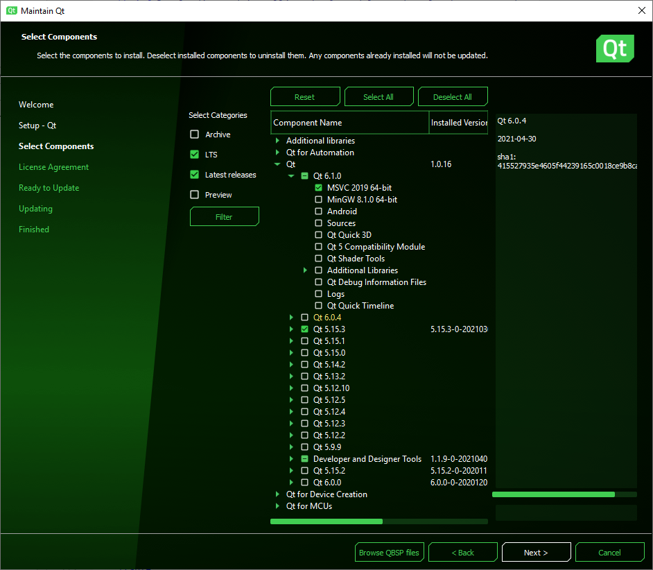

Get and Install Qt
The Qt Online Installer gives you the choice of installing only the modules and tools you need to develop on a particular desktop platform and to run your applications on one or several desktop platforms, mobile or embedded devices, or MCUs.
1. Create a Qt Account
To begin, create a Qt Account. This account gives you access to a web portal where you can manage your licenses, as well as access to the forums and wikis. Also, make sure you read the Qt Licensing page regarding your chosen license.
2. Download the Installer
Go to your Qt account's download page. By selecting the appropriate unified Qt online installer for your OS, you can install commercial or open source versions of Qt, development tools, and other components. The online installer asks for your Qt account credentials. The installer retrieves the license attached to the account from a server and provides a list of available components corresponding to the license.
3. Install Qt
To complete the installation, select the components that you want to install and follow the instructions of the installation program.
You must select at least one Qt version for one platform that you want to run your applications on. For example, if you have installed Microsoft Visual Studio 2019 on 64-bit Windows, you could select MSVC 2019 64-bit under the Qt version you want to develop with.
However, the easiest way to install Qt for desktop development is to select the default installation. You can install additional modules later.

If you also want to run your applications on Android devices, for example, you should select a custom installation and then select a Qt for Android version in the list of components, in addition to the Qt for your desktop platform.
The following table contains examples of which components to install depending on the platforms where you want to run your applications.
| To Develop For | Choose |
|---|---|
| Desktop | Default installation. |
| Mobile Devices | Custom installation, with Qt for your OS and for the mobile device platform that you want to run the applications on. For example, Qt for Android or Qt for iOS. |
| Embedded Devices | Custom installation, with the necessary Qt modules and toolchains from the Qt for Device Creation section, depending on the types of devices that you want to run applications on. |
| Automotive | Custom installation, with the necessary Qt modules and toolchains from the Qt for Device Creation section, depending on the types of devices that you want to run applications on. |
| Automation | Custom installation, with the necessary Qt modules and toolchains from the Qt for Automation section, depending on the types of devices that you want to run applications on. |
| MCUs | Custom installation, with Qt for MCUs. |
To check the platform requirements, see Supported Platforms.
The following YouTube video gives a complete walk-through of the installation process:
Updating or Removing Components
Once Qt is installed, you can use the Maintenance Tool under <install_dir> to add components, update, or remove installed components.
Getting Help
Evaluation and open source users can get help on the Qt forum. See also the Help on using the Forum wiki page.
Non-commercial users can get limited help with the installation process through Qt support.
The primary support channel for commercial customers is their Qt Account.
4. Create Applications
After the installation, Qt Creator opens. You can use the project wizard templates to start creating applications that run on your chosen platform.
If you want to design Qt Quick UIs, open Qt Design Studio and use the project wizard templates there.